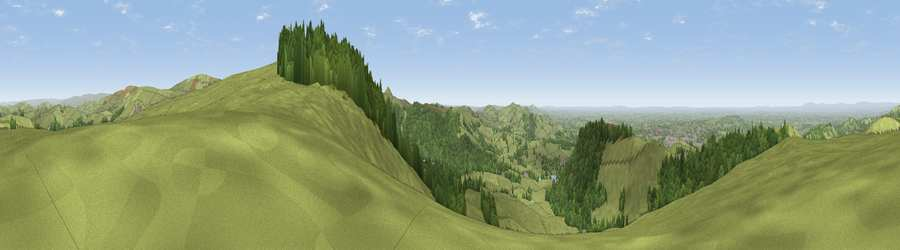

Viewpoint near Langley
#4421 in England · top 2% of its area beats it · near LangleyThe view, rendered

A 360° render of this exact spot computed from the terrain model, tree cover and land cover — summer colours, afternoon light, calibrated against photographs of famous viewpoints. Real trees, hedges and buildings will differ in detail.
The panorama
Grey silhouette: terrain skyline in each direction (720 bearings, Earth curvature and refraction included). Dashed green: skyline with trees (+15 m) and buildings (+8 m) as obstacles. Blue strip: how far the ground is visible on each bearing.
Where the view opens
Wedge length = distance to the farthest visible ground on that bearing (vegetation-aware). Rings at 10, 25 and 50 km.
What fills the view
65% grassland · 30% woodland · 3% built-up · 1% cropland
Angular shares of the visible panorama (visual magnitude), not map area. Landscape diversity 0.36 (0–1 Shannon).
Key numbers
More beautiful places nearby
The staircase of upgrades: each row has a higher view potential than everything closer. Driving times are estimates from straight-line distance, calibrated against real road routing — check an actual route before setting out.
| Place | Direction | Drive | Score |
|---|---|---|---|
| Shining Tor | E · 4 km | ~8 min | 72.7 |
| Viewpoint near Meerbrook | SSE · 10 km | ~20 min | 73.5 |
| Viewpoint near Timbersbrook | SSW · 11 km | ~21 min | 74.4 |
| Viewpoint near Mow Cop | SSW · 18 km | ~32 min | 78.9 |
| Viewpoint near Mow Cop | SSW · 19 km | ~32 min | 80.2 |
| Viewpoint near Harthill | WSW · 48 km | ~69 min | 80.5 |
| White Brow | NW · 49 km | ~70 min | 82.9 |
| Viewpoint near Little Wenlock | SSW · 72 km | ~96 min | 84.2 |
53.25557, -2.06179 · source: screening · position refined by local search. Computed location — check access rights before visiting.